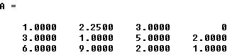

|
Introducción:
El
método de Gauss es utilizado en álbegra lineal para múltiples usos.
Lleva el nombre de su inventor.
Actualmente una de las aplicaciones para las que más frecuentemente
es usado es para la resolución de sistemas de ecuaciones.
La
metodología de cómo aplicarlo se describe a continuación.
Cabe
mencionar que el Método de Gauss puede resolver sistemas con
N número de ecuaciones. Sin embargo, para este ejercicio
vamos a recibir como máximo 3 ecuaciones.
Para
explicar mejor cómo funciona el método se van a ilustrar los pasos
con un ejemplo.
Tomemos
como ejemplo las ecuaciones:
- 4X + 9Y + 12Z = 0
- 3X + Y + 5Z = 2
- 6X + 9Y + 2Z = 1
El formato en que
deberás recibir estas ecuaciones es el siguiente:
figura 1.
Nota que para trabajar con este método sólo
necesitas los coeficientes de las ecuaciones, y por esto es importante
el orden de estos, ya que su posición indica si se trata de un
coeficiente de X, Y o Z.
Casos especiales:
- Si por ejemplo, la primer ecuación hubiera
sido 4X + 9Y = 0 entonces en la posición (0,2) de la matriz
de la figura 1, en lugar de introducir un 12, se hubiera
introducido un 0, esta es la forma de representar cuando
una de las variables no fue incluída en la ecuación.
- De igual manera, si la ecuación hubiera
sido 4X - 9Y + 12Z = 0, entonces en la posición (0,1) de la
matriz de la figura 1, en lugar de haber un 9, sería un -9.
Ten
siempre presente que estas ecuaciones son sólo un ejemplo con el
único propósito de mostrarte el formato. En la práctica recibirás
ecuaciones con diferentes valores en los coeficientes.
Esta matriz de coeficientes es la base que
utilizaremos para trabajar con el método de Gauss.
Operaciones básicas:
Gauss tiene tres operaciones
básicas:
- Multiplicación de un escalar por un renglón
de la matriz.
- Intercambiar renglones de la matriz.
- Sumar a un renglón el múltiplo de otro.
Estas operaciones son muy simples y en
conjunto te permiten resolver el sistema.
Comenzaremos por ver cada una de estas operaciones de forma
individual para después ver como combinarlas.
Construye un programa
completo en C libre de warnings y errores, que incluya las siguientes
funciones o procedimientos:
Utilizando la
estructura
#define, define las
constantes
REN de 3 y COL de 4, que serán el
número renglones y columnas respectivamente que tendrá la matriz
en el programa.
a) Capturar la matriz
Crea el
procedimiento
capturaMatriz que recibe como
parámetros una matriz de flotantes de REN por
COL. El procedimiento pedirá al usuario un valor flotante y lo
almacenará en la localidad correspondiente en la matriz. (hasta que
se llene la matriz se repite el mismo proceso).
Tomemos como
ejemplo las siguientes ecuaciones:
- 4X + 9Y + 12Z = 0
- 3X + Y + 5Z = 2
- 6X + 9Y + 2Z = 1
El formato en
que deberá llenar la matriz sería el siguiente:
b) Imprimir la matriz
Crea el
procedimiento
imprimeMatriz, que recibe como
parámetros una matriz de flotantes de REN por
COL. El procedimiento desplegará en pantalla el contenido
de la matriz.
c) Multiplicación de un escalar por un renglón
El nombre de esta operación lo dice todo.
De lo que se trata es que dado un valor X
(entero o fraccional), y un número Y que sea un
renglón de la matriz; se va a multiplicar el valor X
por cada elemento del renglón Y de la matriz.
Un ejemplo, si se multiplica el primer renglón de la matriz
de la figura 1, por 3. El resultado de esto sería:
figura 1
------->
Nota como el proceso fue el de simplemente
multiplicar cada número del renglón seleccionado por el número 3.
Nota importante: Para esta operación, está prohibido la
multiplicación por "0".
Crea el
procedimiento
renglonMatriz, que recibe
como parámetros una matriz de flotantes de REN por COL,
un entero renglon y un flotante num. El
procedimiento multiplicará el renglon de la matriz por el
valor de num.
Ejemplo:
- Si la
matriz tiene los siguientes valores:
2 5
6 4
3
4 5 1
7
8 5 6
9
7 1 5
- Después de
llamar al procedimiento renglonMatriz con el valor
de renglon de 1 y el de num de 4.0, los
nuevos valores en la matriz deberán ser:
2
5 6 4
12
16 20 4
7
8 5 6
9
7 1 5
d) Intercambiar
renglones de la matriz
La segunda función es la más sencilla ya
que sólo consiste en intercambiar dos renglones dados de la matriz.
Como entrada
recibes la matriz y dos números que representan los renglones de la
matriz que se van a intercambiar.
- En la matriz de ejemplo (figura 1)
figura1
- Intercambiar los renglones 1 y 2 se
reflejaría así:
Crea el
procedimiento
intercambiaRenglones, que
recibe como parámetros una matriz de flotantes de REN por
COL, un entero renglon1 y un entero renglon2.
El procedimiento intercambiará los valores del renglon1 por los
valores del renglon2 de la matriz.
Ejemplo:
- Si la matriz tiene los siguientes
valores:
2 5
6 4
3
4 5 1
7
8 5 6
- Después de
llamar al procedimiento intercambiaRenglones con el
valor del renglon1 =
1 y el de renglon2
= 2, los nuevos valores en la matriz deberán ser:
2 5
6 4
7 8
5 6
3 4
5 1
e) Sumar a un renglón el
múltiplo de otro
Esta
operación se visualiza mejor si comenzamos a estudiarla sólo con dos
números y posteriormente regresamos a la matriz.
Por ejemplo,
para esta operación se te podría pedir que le sumaras a un número
A la mitad de un valor B. Ahora, dados los
valores A=3 y B=4. El resultado de la operación sería
5. Ya que A+1/2(B) => 3 +
1/2(4) = 5.
En este
ejemplo en particular se especificó que a A se le
sumara la mitad de B, sin embargo para el método
de Gauss la proporción es variable, es decir, podrás necesitar a
veces sumar a A dos veces el valor de B
o sumar a A una tercera parte el valor de B,
etc.
En otras
palabras lo que vas a hacer es: A=A+num*B.
Donde
A,B son números enteros y
num ses un número flotante. "num"
es el valor que está indicando si se desea sumar la mitad (1/2), el
doble(2), la tercera parte(1/3) o qué relación.
Ahora,
aplicando esto a la operación del método de Gauss, el
procedimiento es el mismo, sólo que aplicado a dos renglones de la
matriz. Es decir, a cada número contenido en un renglón A se le va a
sumar un múltiplo del número contenido en la misma posición del
renglón B.
RenglonA(posiciónX) = RenglonA(posiciónX) + Num *
RenglonB(posiciónX)
Ejemplo:
- Para la matriz de la figura 1.
figura1
- Para el primer elemento del segundo renglón se siguió la operación
que se describía en el inicio de esta sección, es decir:
- 3+1/2(4)=5
- 1+1/2(9)=5.5
- Y así sucesivamente hasta terminar con todos los elementos.
Crea el
procedimiento
sumaMultiplo, que recibe como
parámetros una matriz de enteros de REN por COL, un
entero renglonA, un entero renglonB. y un
valor flotante num. El procedimiento realizará lo siguiente: "A cada número contenido en un
renglonA se le va a sumar un múltiplo del número contenido en la
misma posición del renglonB"
RenglonA(posiciónX) = RenglonA(posiciónX) + Num *
RenglonB(posiciónX)
Ejemplo:
- Para la siguiente matriz:
4.0 9.0 12.0 0
3.0 1.0 5.0 2.0
6.0 9.0 2.0 1.0
-
Después de
llamar al procedimiento sumaMultiplo con el valor del
renglonA = 1, el renglonB = 0 y num = 1/2, es decir, si se necesitara
realizar la suma de la mitad del renglonB al renglonA, los nuevos valores en la
matriz deberán ser:
4.0 9.0 12.0 0
5.0 5.5 11.0 2.0
6.0 9.0 2.0 1.0
f) Sumar diagonal
Crea la función sumaDiagonal
que recibe como parámetros una matriz de flotantes de
REN por COL y regresa como resultado la suma de
todos los elementos que se encuentran en la
diagonal de la matriz.
Ejemplo:
- Para la siguiente matriz:
4.0 9.0
12.0 0
5.0 5.5 11.0 2.0
6.0 9.0 2.0 1.0
-
sumaDiagonal
debe regresar como resultado: 11.5
¿Cómo utilizo esto para resolver un
sistema de ecuaciones?
Lo que nosotros queremos al resolver un sistema de ecuaciones es
encontrar el valor de las variables, despejar X,
Y y Z de la ecuación.
Recuerda que cada columna tiene los coeficientes que representan cada
variable, es decir la primera a X, la segunda a Y, y la tercera a Z.
La última columna es la de las constantes.
El método de
Gauss lo que propone es hacer uso de sus operaciones básicas,
aplicarlas a una matriz como la de la figura 1. Para llegar a una
matriz como la siguiente:
Figura
2.
Si recuerdas
todas las indicaciones que ya se han explicado a lo largo de este
documento, sabrás que la interpretación de esa matriz es:
X = 8
Y = 5
Z = 2
Con lo cual ya
estaría resuelto el sistema de ecuaciones. Esto es importante porque
deberás mantener en mente cuál es el estado final al que deberá de
llegar tu matriz.
Por supuesto que los valores de 8, 5 y 2 dados son sólo un ejemplo. El
verdadero valor que deberías de obtener al realizar el método de Gauss
sobre la matriz de la figura 1, es el siguiente.
Como puedes
ver, los valores de la diagonal deben quedar en uno y el resto en 0,
sin incluir a la columna de constantes, es decir, las operaciones que
realizes serán desde la primer columna hasta la última - 1.
- Comenzarás el proceso de conversión desde
el primer elemento de la primer columna. Para un valor de 1,
deberas multiplicar el reglón en el que te encuentres por el
inverso del elemento a convertir en 1. Usa la operación:
"Multiplicación de un escalar por un renglón"
Por
ejemplo, para que el cuatro sea 1, deberás multiplicar todo el renglón
por 1/4. De este modo al multiplicar 4 por 1/4, obtendrás el 1.
Resultado:

- Para
lograr convertir en cero un elemento usarás la operación:
"Sumar a un renglón el múltiplo de
otro".
El valor múltiplo que usarás deberá ser el mismo que el número que
quieres convertir en 0, pero con el signo invertido.Y el renglón del
cuál sacarás su múltiplo será aquel del que ya hayas convertido a un
número 1 en la misma columna.
Por ejemplo, el
primer elemento del segundo renglón, el 3.
"Tomas como
múltiplo el mismo valor pero con signo invertido": -3.
"Y tomas como
renglón aquel en el que haya un 1 en la misma columna del elemento a
convertir en cero": El 3 está en la primer columna.Y ya sabes que en
esa columna, en el primer renglón había un 4 que fue convertido a 1,
así que voy a sumar al renglón 2 el múltiplo -3 del primer renglón que
es donde está el 1.
De esta forma
tendrás la siguiente operación: 3 + (-3)*(1)=0.
Y así generamos
el 0.
Ejemplo:
Resultado:
3+(-3*1), 1+(-3*2.25), 5+(-3 * 3) =
2+(-3*0)
Esta misma
operación la realizas para los renglones que sigan hacia abajo y hacia
arriba (si es que los tiene), del 1 que hayas convertido. El resultado
será que en un recorrido de la matriz, convertirás primero en 1 el
valor que está sobre la diagonal y después en 0's el resto de los
valores de esa misma columna.
NOTAS:
-
Recuerda que no puedes multiplicar por 0.
-
Debes verificar la siguiente condición antes de intentar
convertir en 1: Si el valor que está en la diagonal es 0
entonces deberás intercambiar ese renglón por otro en el que en
esa posición haya un valor diferente de 0. Puede ser el de la
columna superior o inferior, no existe una regla para esto. Y
será necesario comenzar el proceso de nuevo desde el principio.
- Ten
presente que vas a detenerte en la última columna menos uno. Ya
que en la última columna se "guardan" de forma implícita los
valores finales de X, Y, Z. Como lo viste en un principio.
-
Recuerda que siempre estarás recibiendo una matriz de 3 X 4. Y
no olvides que debe funcionar para cualquier valor en los
coeficientes. La matriz introducida como ejemplo dio como
resultado valores fraccionales, así que la matriz que manejarás
será de valores flotantes.
- Si
deseas información más detallada sobre el Método de Gauss, da clic en la liga donde
encontrarás una serie de imágenes del proceso de resolución de
la matriz de la figura 1, paso a paso.
. |